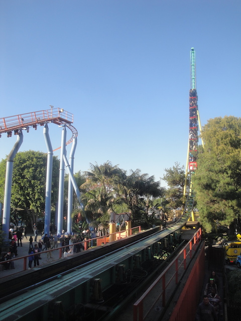
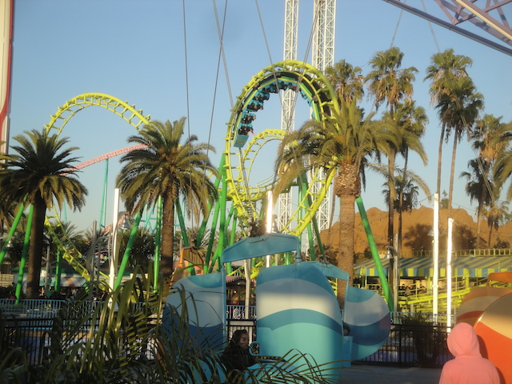
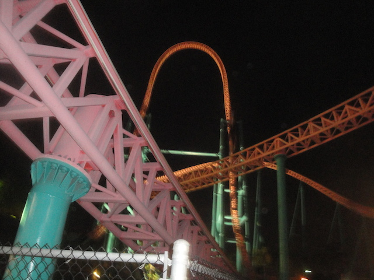
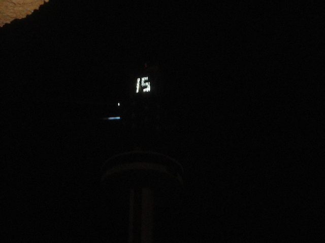

| |
Knotts New Years Eve 2014
All right. Time for another New Years Eve, and this year, we decided to do something different and spend New Years Eve at Knotts Berry Farm. Yeah, now we've spent New Years Eve at every single park in Southern California. We've spent it at Six Flags Magic Mountain. We've spent it at the Disneyland Resort. And now we're spending it at Knotts Berry Farm. And of course, we're starting it out at Fuddruckers. Why? Because BUFALLO BURGERS!!!
Oh my. That has got to be the most flamboyant limousine I have ever seen. Please tell me that Prince or Elton John is at the park today.
 All right. Lets start out our day on Knotts Berry Farm's star attraction, Xcelerator.
All right. Lets start out our day on Knotts Berry Farm's star attraction, Xcelerator.
"This ride is freaking awesome!!"
Merry Christmas from Knotts Berry Farm! After all, the holiday is only 358 days away!!! =)
I see Knotts Berry Farm has been taking marketing lessons from Full Throttle.
HELL NO!! WE ARE NOT RIDING COAST RIDER TODAY!!!
Don't worry. We got plenty of rides on Timber Mtn Log Rides, with lots of oppertunities for them to yell "SIT DOWN!!!".
That would be a pretty wreath on Calico Mine Ride. Except its not Christmas Time anymore.
The vultures have arrived to scavenge and eat all the dead ornaments that should be putten away right now. =)
Yeah. Knotts Berry Farm is EXTREMELY crowded today. I really prefer it in when we went on New Years Day. Nobody comes then cause they're all too busy being hungover.

Oh hey. Montezooma's Revenge is open today! So at least we got some nice Schwarzkoph goodness in today. =)
 Insert "It's not Christmas Time anymore" caption here.
Insert "It's not Christmas Time anymore" caption here.
Ohh. A frisbee without any restraints. That oughta make it better. =)

We rode both the Boomerang and the flyers today. The flyers because their awesome. The Boomerang because...it had a short line. Ok! Plus, at least I didn't marathon it 6 times like Cody did with Kong.
You know what. I suddenly decided I want to carry around a deadly weapon wherever I go. Where can I aquire such a thing?
"MONEY!!! I'VE BEEN KILLING MYSELF FOR THIS FOR THE PAST FEW YEARS!! I NEED IT!!! GIMME!!!"
Maybe now with all that money, I can actually afford a college education where I will learn to properly spell "Millionaire". Or I can just go to Germany.
Hmm. Which bullet do I want to kill you with?
Hey, this is a fun way to kill the time since all the lines are too damn long. We even had a random girl specate our checkers game.
HELL NO!! NOT WORTH IT!!
After a great dinner at Mrs. Knotts, we came back into the park for more fun.
I may hate Christmas stuff after Christmas, but New Years Eve is a holiday. So this is acceptable until January 2nd.
Ghostrider was running GREAT tonight!! Yes, it was rough, but it was good rough. Like Rough Sex.
 Ok. That's just awesome. I love it. Even if its out of place.
Ok. That's just awesome. I love it. Even if its out of place.
Fun fact. Knotts Berry Farm actually has a museum. Yay! Another new thing for me to discover!
Ohh. Impressive.
Well you certainly had a lot of time on your hands.
 Yeah yeah. It's soon going to be 2015. I know.
Yeah yeah. It's soon going to be 2015. I know.
Thank you for sucking all the people away from the rides.

See. Now we got an Xcelerator ride. =)
 And just look how long the line for Montezooma's Revenge is.
And just look how long the line for Montezooma's Revenge is.
Windseeker's grave has been reduced to a Hat and Blow Horn dispensary for New Years Eve.
New Years Eve. An excuse for me to wear a hat, blow a horn, drink alcohol (the years when I'm not at a theme park event), and be an obnoxious ass for a night.
You suckers can all be crowded by the stage. We're gonna watch the fireworks from the Timber Mtn Log Ride line and ride it when its 2015.

Oh, speaking of 2015, it's here.
This happens all the time actually. We just call it midnight. That's all.
WE'VE GONE AROUND THE SUN!! YAY!!
But seriously. This was a great New Years event that Knotts pulled off, and 2015 certainly has some exciting things to look foreword to (JAPAN!!!).
Home
|